ES6-ES11笔记
概念
ECMAScript是ECMA国际 标准化的脚本语言设计标准
ES6
let变量
1let a;2let a,b,c;3let a=1,b=2,h=[];- let变量不能重复声明，var可以
- 块级作用域（其他还有 全局、函数、eval）
- 不存在变量提升（var 可以在声明前使用，内容是undefined）
- 不影响作用域链
xxxxxxxxxx71{2 let s='xxx';3 function fn(){4 console.log(s);//函数里找不到，会往上一级找5 }6 fn();//可以输出xxx7}eg、点击元素变色
xxxxxxxxxx81let items = document.getElementsByClassname('item');2for(let i=0;i<items.length;i++){3 item[i].onclick=function(){4 //this.style.background='pick';5 item[i].style.background='pick';6 //let可以，var不行7 }8}const常量
值不能修改
xxxxxxxxxx11const SCHOOL = 'xxx'- 一定要赋初始值
- 一般常量名使用大写（不是语法规则）
- 常量的值不能修改
- 对于数组和对象的元素进行修改是允许的
变量的解构赋值
按照一定的模式从数组和对象中提取值，对变量进行赋值
xxxxxxxxxx121//数组2const F =['1','2','3','4'];3let [a,b,c,d]=F;4//对象5const zhao={6 name:'赵本山',7 age:66,8 f: function(){9 ;10 }11}12let {x,y,z}=zhao;模板字符串
xxxxxxxxxx21let str=`我是字符串`;2console.log(str,typrof str);- 内容中可以直接出现换行符
- 变量拼接${变量}
对象的简化写法
ES6允许在大括号内直接写入变量和函数，作为对象的属性和方法
xxxxxxxxxx161let name='xxx';2let fun=function(){xxx;};3let school1={4 name:name,5 fun:fun;6 fun2:function(){7 xxx;8 }9}10let school ={11 name,12 fun,13 fun2(){14 xxx;15 }16}箭头函数
ES6允许使用=>定义函数，省略了function
xxxxxxxxxx91let fn= (a,b)=>{2 xxx;3}4let fn2= a=>{5 xxx;6}7let fn3= ()=>{8 xxx;9}- this是静态的，this始终指向函数声明时所在作用域下的this值（原来指向调用的实例对象）
function xxx(){}- 不能作为构造实例化对象
- 有且仅有一个形参可以省略()
- 唯一语句省略return
this栗子
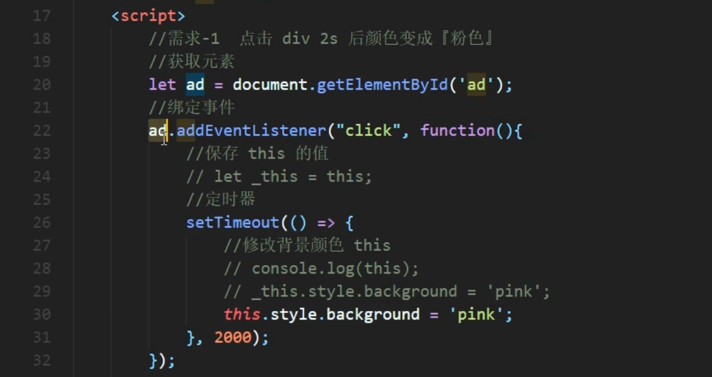
适合与this无关的回调、定时器/数组方法的回调，
不适合this有关的回调、事件回调、对象的方法
函数参数默认值
xxxxxxxxxx31function aaa(a,b,c=0){2 3}- 一般有默认值的参数放后
- 可以与解构赋值结合
xxxxxxxxxx41function fun({a=1,b,c}){2 a==1;3};4fun(object);
rest参数
ES6引入rest参数用于获取实际参数
ES5获取实参的方法：函数中直接使用arguments
xxxxxxxxxx41function date(){2 console.log(arguments)3}4data("1","2");//输出对象ES6rest
xxxxxxxxxx41function date(args){2 console.log(args);3}4data("1","2");//输出数组rest必须放最后
扩展运算符
...将数组转化为逗号分隔的参数序列
数组合并
xxxxxxxxxx31let arr1=[1,2]2let arr2=[3,4]3let arr=[arr1,arr2]数组克隆
xxxxxxxxxx11/伪数组转化为数组
xxxxxxxxxx21const div=document.querySelectorAll("div");2argumentsSymbol
创建唯一的对象
xxxxxxxxxx31let s1=Symbol('abc')2let s2=Symbol('abc')3console.log(a1==s2)//false
xxxxxxxxxx31Symbol();2Symbol("xxx");3Symbol.for("xxx");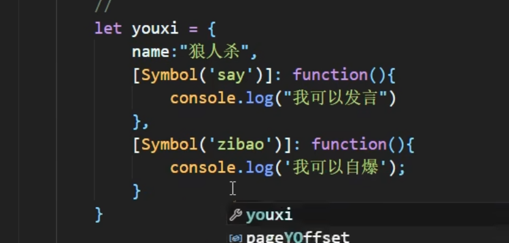
Symbol的内置属性【】
迭代器Interator
接口，为不同数据结构提供统一的访问机制
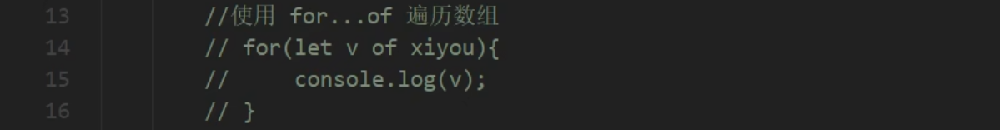
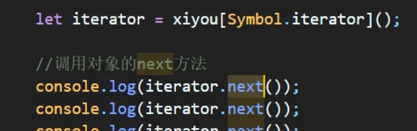
自定义【】
生成器函数
异步编程解决方案
语法
声明
xxxxxxxxxx31function * xxxfun(){2 console.log('xxx')3}执行
xxxxxxxxxx21let i=xxxfun();2i.next();返回一个迭代器对象，需要调用next方法才能执行代码
yield分隔符
函数代码的分隔符
xxxxxxxxxx121function * xxxfun(){2 console.log('xxx');3 yield '1';4 console.log('xxx');5 yield '2';6 console.log('xxx');7 yield '3';8}9let i=xxxfun();10i.next();//next返回的是yeild的内容11i.next();12i.next();用迭代器遍历调用
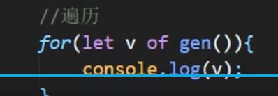
参数传递
1、获取迭代器对象时传递
2、调用next方法时传递
xxxxxxxxxx191function * xxxfun(arg){2 3 console.log(arg);4 //第一次调用next执行到这里5 let one = yield 'y1';6 console.log(one);7 //--8 let two = yield 'y2';9 console.log(two);10 //--11 let three = yield 'y3';12 console.log(three);13 //--14}15let i=xxxfun();16i.next();17i.next(2);//第二次调用时传入的参数，将作为第一个yield的返回结果18i.next(3);19i.next(4);
回调实现的异步
xxxxxxxxxx91setTimeout(()=>{2 console.log(1);3 setTimeout(()=>{4 sonsole.log(2);5 setTimeout(()=>{6 sonsole.log(3);7 },3000)8 },2000)9},1000)
xxxxxxxxxx211//声明异步函数2function first(){3 setTimeout(()=>{},1000);4}5function second(){6 setTimeout(()=>{},2000);7}8function third(){9 setTimeout(()=>{},3000);10}11//声明生成器函数12function * gen(){13 yield first();14 yidld second();15 yidld three();16}17//获取迭代器18var iterator=gen();19iterator.next();//执行异步函数20iterator.next();21iterator.next();
连续调用
xxxxxxxxxx211function getUser(){2 setTimeout(()=>{3 let data='user';4 interator.next(data);5 },1000)6}7function getOrder(){8 setTimeout(()=>{9 let data='order';10 interator.next(data);11 },1000)12}13function getGoods(){14 setTimeout(()=>{15 let data='good';16 interator.next(data);17 },1000)18}19function * gen(){20 let users= yi21}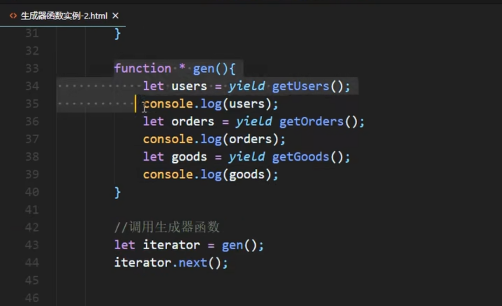
Promise
异步编程的新解决方案，用来封装异步操作的 构造函数
xxxxxxxxxx111//实例化Promise对象2const p=new Promise((resolve,reject)=>{3 //进行异步操作4 //setTimeout5 6 //成功7 resolve('返回数据')8 //失败9 reject('失败原因')10})11p.then((value)=>{},(reason)=>{}).catch((err)=>{})
promise.prototype.then()方法
x1//实例化Promise对象2const p=new Promise((resolve,reject)=>{3 //进行异步操作4 //setTimeout5 6 //成功7 resolve('返回数据')8 //失败9 reject('失败原因')10})11p.then((value)=>{12 return 123;//返回非Promise对象，则promise.prototype的返回为值为123的Promise成功对象13 return new Promise((resolve,reject)=>{14 resolve()//返回Promise对象，则promise.prototype的返回为该值、成败状态的Promise对象15 //reject()16 })17},(reason)=>{})18
链式调用
xxxxxxxxxx71p.then((value)=>{2 return new Promise((resolve,reject)=>{})3}).then((value)=>{4 return new Promise((resolve,reject)=>{})5}).then((value)=>{6 return new Promise((resolve,reject)=>{})7})catch方法
略
集合【】
class【】
数值扩展
0、Number.EPSILON
表示JavaScript表示的最小精度，用来浮点数的比较
xxxxxxxxxx11
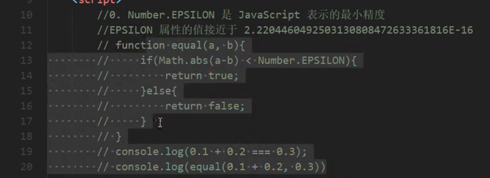
1、二进制和八进制
xxxxxxxxxx41let b =0b10101;//0b开头2let o =0o777;//0o开头3let d =100;//直接写4let x=0xff;//十六进制
2、检测是否为有限数
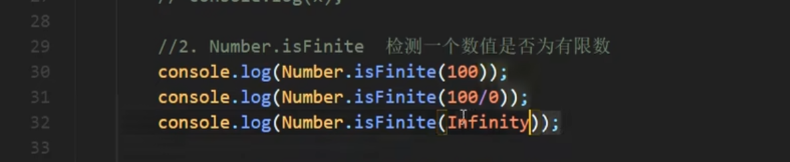
3、检测是否为数值
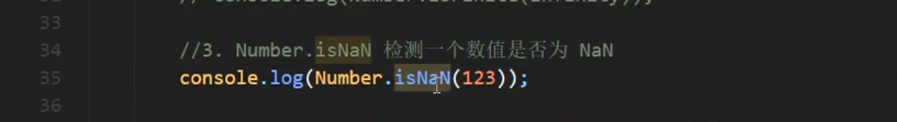
4、字符串转数字
会截断非数字
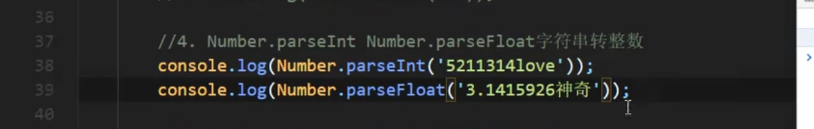
5、是否为整数
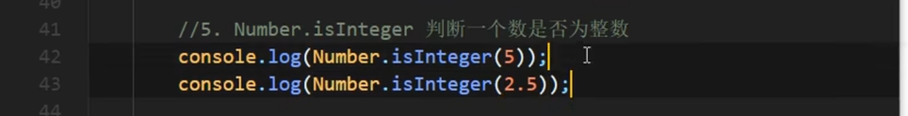
6、抹去小数位
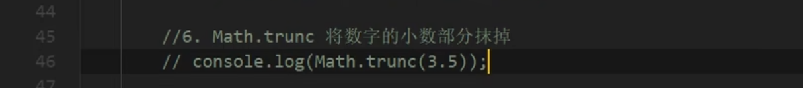
7、判断正负和0
返回1、-1、0

对象方法拓展
1、判断两个值是否相等
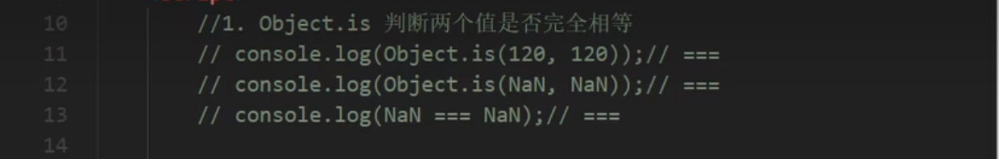
2、合并对象
如果有相同的属性，后面会覆盖前面
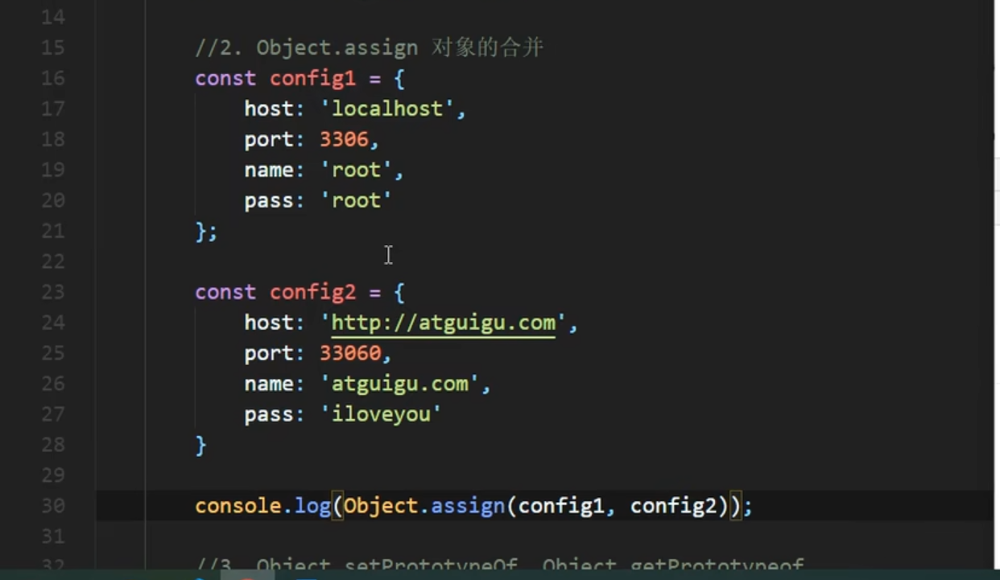
3、设置/获取原型对象
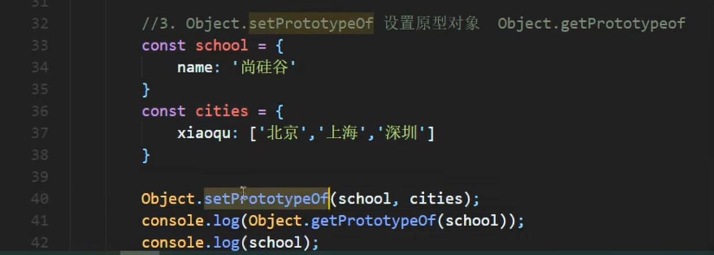
模块化
优点：防止命名冲突、代码复用性、高可维护性
以前的模块化规范：CommonJS、AMD、CMD（JS自己没有，靠社区推出）
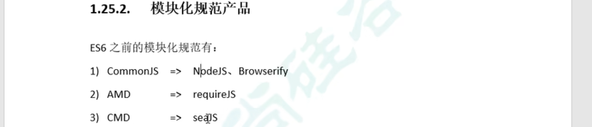
导出模块语法
分别暴露
xxxxxxxxxx21export let a=xxx;2export function b(){}统一暴露
xxxxxxxxxx31let a=xxx;2function b(){};3export {a,b};默认暴露
xxxxxxxxxx11export default {}//对象居多导入模块语法
通用方式
xxxxxxxxxx31import * as m1 from "./xxx.js"2//m1.default3//m1.a解构赋值
xxxxxxxxxx31import {a,b} from './xxx.js'2import {a as c,d} from './yyy.js';//使用别名解决同名冲突3import {default m3} from './xxx.js'简便形式
只能用于默认暴露
xxxxxxxxxx11import 要保存的变量名 from './xxx.js'浏览器使用模块化
缺点：浏览器兼容性、不一定能导入npm安装的包
xxxxxxxxxx41<script type="module">2 import * as m1 from "./xxx.js"3 console.log(m1)4</script>xxxxxxxxxx11<script type="module" src="../main.js"></script>
Babel
处理模块，转化为浏览器能识别的js
1、安装工具：命令行工具，预设包，打包工具（browserify、webpack）
xxxxxxxxxx11npm i babel-cli babel-preset-env browserify -D-D表示开发依赖
2、运行
xxxxxxxxxx21npx babel src/js dist/js --preset=babel-preset-env2#源目录 输出目录 预设3、打包
xxxxxxxxxx11npx browserify dist/js/app.js -o dist/bundle.jsES7
数组include方法
指数操作符
xxxxxxxxxx41//检查数组中是否包含元素，返回布尔类型2arr.includes()3//指数操作符**4//2**3==Math.pow(2,3)==8
ES8
异步
async函数
xxxxxxxxxx11synv function xxx(){}- 返回非promise对象
- 抛出错误
- 返回promise对象
await表达式
只能放在async函数内
- await 操作符用于等待一个 Promise 兑现并获取它兑现之后的值。
- promise成功，返回值
- promise拒绝，抛出异常
async+await封装AJAX
用promise发请求，用await接结果，很方便
xxxxxxxxxx201function sendAJAX(url){2 return new Promise((resolve,reject)=>{3 const x=new XMLHttpRequest();4 x.open('get',url)5 x.send();6 x.onreadystatechange=function(){7 if(x.readyState===4){8 if(x.status >=200 && x.status < 300){9 resolve(x.response);10 }else{11 reject(x.status);12 }13 }14 }15 })16}17async function aFun(){18 let result=await sendAJAX("https://api.apiopen.top/getJoke");19 let result2=await sendAJAX('url');20}对象方法扩展
xxxxxxxxxx111//获取对象所有键，返回数组2let arr = Object.keys(obj);3//获取对象所有值，返回数组4let arr = Object.value(obj);5//获取对象所有键值对，返回键值对对象的数组6let arr = Object.entries(obj);7//创建Map 8let map = new Map(Object.entries(obj));9//创建对象属性的描述对象10//键不变，值变{writable,configurable,enumerable,vaule:{值}}11let obj = Object.getOwnPropertyDescriptors(obj);ES9
拓展运算符
xxxxxxxxxx11obj={obj1,obj2}rest参数
xxxxxxxxxx11function fun({a,b,c}){}正则表达式拓展
分组捕获和命名
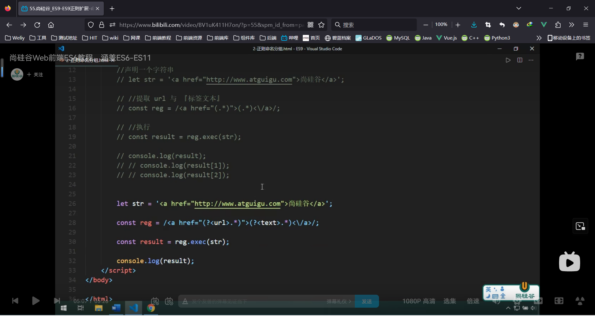
反向断言
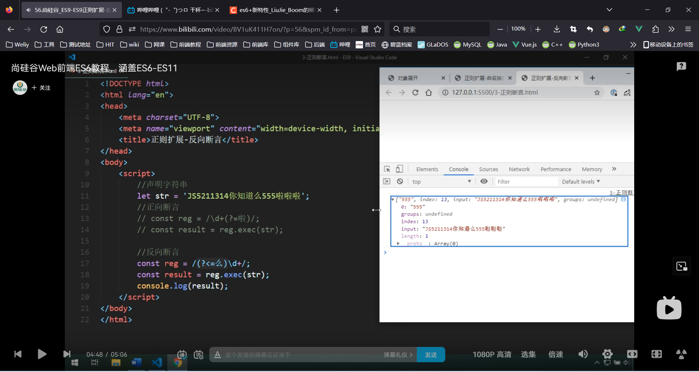
dotAll模式
xxxxxxxxxx81// . 元字符，除换行符以外的任意单个字符2let str=`3 <ul>4 <li>...</li>5 </ul>6`7const reg = /<li>\s+<a>(.*?)<\/a><p>(.*?)<\/p>/;8const reg = /<li>\s+<a>(.*?)<\/a><p>(.*?)<\/p>/gs;ES10
对象拓展方法
fromEntries
xxxxxxxxxx21Object.fromEntries([['key','value'],])2//将二维数组转化为对象，和Object.entries(obj)互逆trim
xxxxxxxxxx41//trim，原来就有，清除字符串中的空白2//新增方法，清除字符串前/后中的空白3str1=str.trimStart();4str2=str.trimEnd();flat
xxxxxxxxxx41//将高维数组转化为低维数组2let arr=[1,[2,[3]]]3arr.flat()//3维度转2维4arr.flat(2)//深度为2，3维转1维数组symbol
xxxxxxxxxx21let s = Symbol('abc')2s.descriptionES11
对象私有属性
xxxxxxxxxx131class Person{2 name;3 #age;4 #weight;5 constructor(name,age,weight){6 this.name=name;7 this.#age=age8 }9 say(){10 console.log(this.#age)11 //只能在对象中调用12 }13}批量Promise
allSettled
xxxxxxxxxx11Promise.allSettled([promise1,promise2])始终返回成功，用于获取每个值
all
xxxxxxxxxx11Promise.all([promise1,promise2])都成功时才成功
批量正则
matchAll
xxxxxxxxxx11resultArr=str.matchAll(reg);//可选链操作符
xxxxxxxxxx21a.b;//如果a==undefined，会报错2a?.b;//使用可选链操作符?.时，a==undefined则返回undefined动态导入
提高模块加载效率
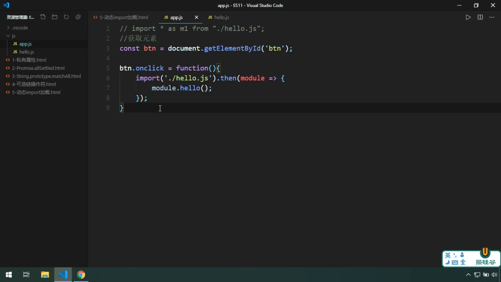
大整数
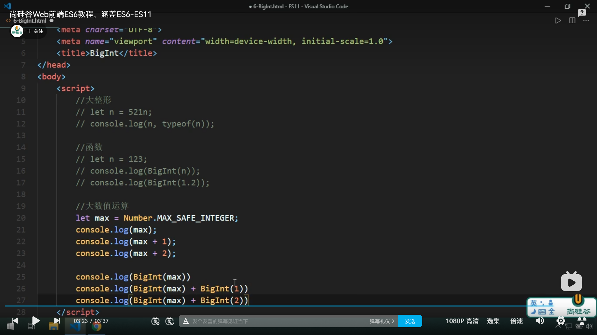
globalThis
指向全局变量，浏览器是window、NodeJS是gobal